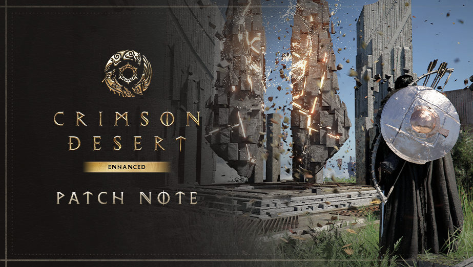

An independent fan newspaperSeptember 11, 2026
Crimson Desert Report Hub
Patch reportcrimsonreporthub.com

Patch 2.02.00
Adds Mac cross-save
Quest, storage and stability fixes.
Unofficial · Fan-runGame imagery © Pearl Abyss